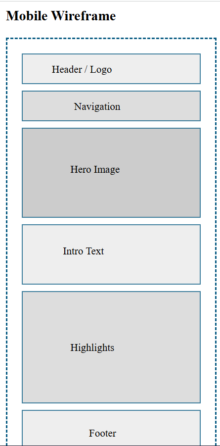

Website Planning Document
Discover Zimbabwe - A Cultural and Travel Guide
Site Name
Discover Zimbabwe
This name represents a website focused on showcasing Zimbabwe’s beauty, culture, history, wildlife, and travel attractions.
It is simple, memorable, and clearly communicates the purpose of the site.
Site Purpose
The purpose of this website is to educate and inspire visitors by providing information about Zimbabwe’s top travel destinations,
major cities, cultural traditions, wildlife, local foods, languages, and travel tips. The site serves as a helpful guide for tourists,
students, or anyone wanting to learn more about Zimbabwe.
Scenarios
- “What are the must-see travel destinations in Zimbabwe?”
- “What cultural traditions and foods should I expect when visiting Zimbabwe?”
- “What is the best time of year to travel to Zimbabwe?”
Color Schema
The colors chosen reflect Zimbabwe's natural landscape and cultural richness.
Dark Blue (#065A82) – Used for headings and accents.
Green (#4CAF50) – Used for subheadings, highlights, and buttons.
Typography
Headings: Merriweather (serif)
Body Text: Poppins (sans-serif)
Wireframes
Mobile View

Mobile wireframe layout: simple stacked sections including header, navigation, banner, intro text, highlights, and footer.
Desktop View

Desktop layout includes a wider navigation bar, hero image, multi-column content sections, and a footer.
Testing
Before submission, this document will be checked using:
- HTML Validator
- Google Lighthouse
- Color Contrast Checker
- Responsive Viewport Tools